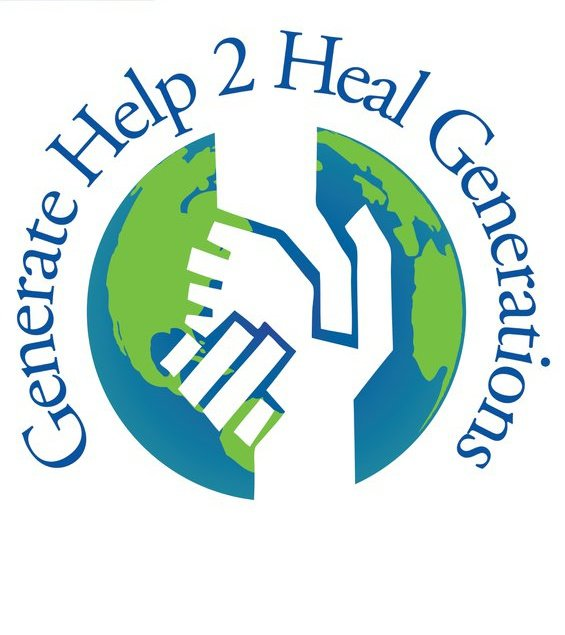

Welcome
Welcome to our website. Generate Help to Heal Generations is a non-profit student run organization that sends medical supplies to countries in need
Why we do this
Caring About The Future Generations Is Our Common Goal A woman dies every NINE minutes around the globe due to a lack of medical supplies; the clock is counting down!
What do we do?
American hospitals waste thousands of tons of medical supplies every day. This includes unused sterile medical supplies and fully functional equipment discarded for regulatory reasons. GH2HG collects and redistributes these supplies to match the specific needs of hospitals in the developing world.
- COLLECT:GH2HG collects medical supplies and equipment from American hospitals. We also accept donations from individuals.
- SORT:MSU student volunteers inspect, test and inventory the supplies and equipment. We discard the supplies that do not meet our stringent standards.
- SHIP:Supplies are shipped in containers to hospitals in developing countries.
- DELIVER:We build partnerships on the ground to ensure that the supplies reach the hospitals as planned. Every container we have shipped has reached its destination.